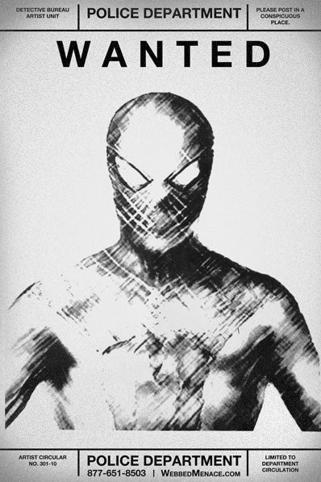

Spiderman: Threat or menace
Is spiderman really who he says he is?
Written by J. Jonah Jameson
Last night, I walked out of the 6-train at 96th Street, only to be greeted by a freshly painted graffiti tag of a large red spider painted on a wooden construction fence.
Generally, I ignore the “modern art” of the masses. I must be far too uncivilized to appreciate the subtle nuances of the work. But in this case, the meaning was not open to interpretation.
Do the young people of this city really want to turn the mysterious creature known as Spider-Man into some kind of modern-day Robin Hood?
It has been three months since the terrorist attack at Oscorp Tower in Midtown Manhattan. Three months since a man who had changed into a seven-foot tall lizard battled against another man in a red and blue unitard who could crawl up walls. Three months since the city was introduced to a new status quo, one that will adversely affect the entire planet. It has been three months, and we know nothing more about the man called Spider-Man than we did on that terrible night.
This masked, web-slinging vigilante has refused to identify himself. He has given no public statements. He has refused to be interviewed by the police. He has repeatedly refused requests from the media, including from this paper, to provide some assurance to the people of this city that he means us no harm.
Who appointed him as the new sheriff in town? I didn’t. Did you?
What gives him the moral, much less legal, authority to decide who deserves punishment and how that punishment should be doled out?
Heroes do not need to promote their actions, but they also do not hide from the people they help. Until Spider-Man tells us more about himself, he is no hero. I dare him to prove me wrong.